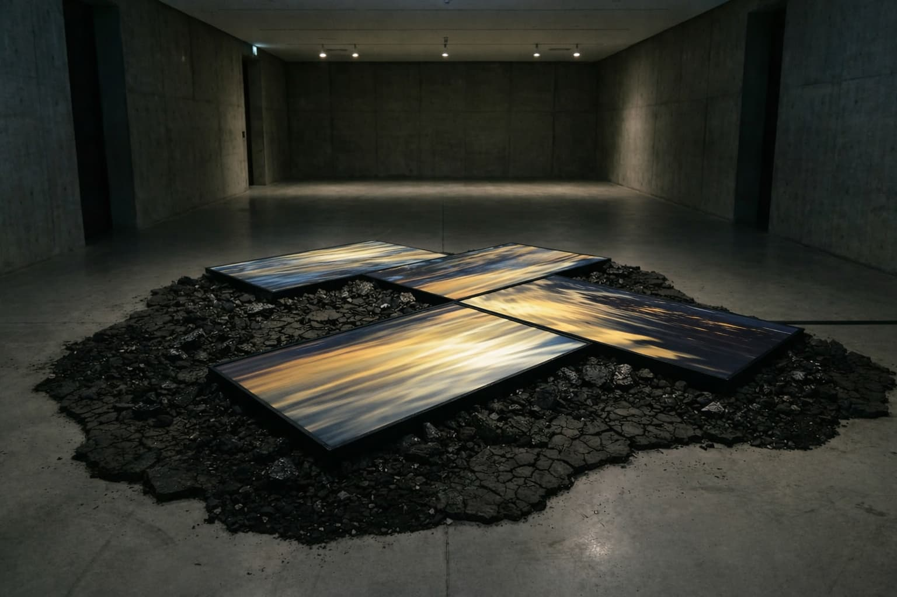
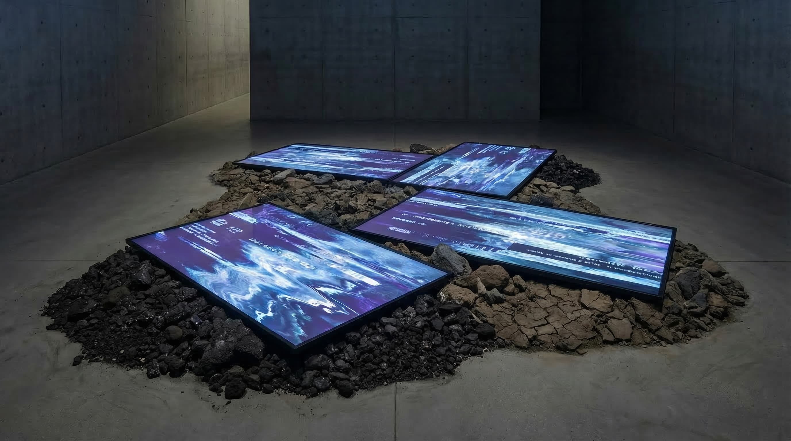
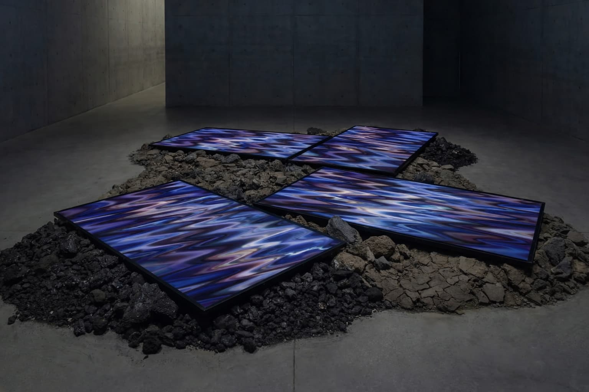
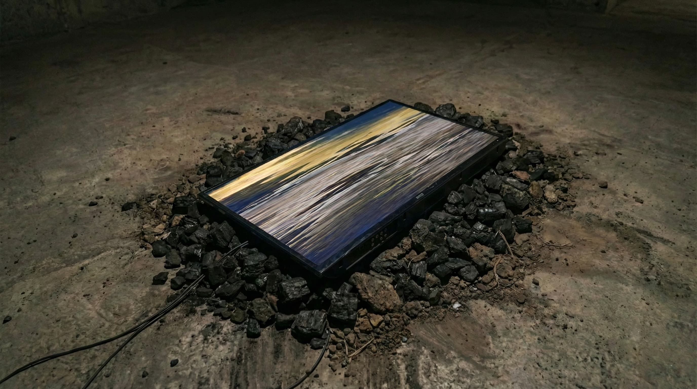

×
Interactive Digital Installation • 2026




Wishing Well stages a quiet resistance against the dominant values of contemporary consumer society. In traditional civilization, the wishing well was once a sacred contractual space where a coin might be exchanged for a future miracle from a transcendent power. In the algorithmic and consumer-technological present, that ritual of supplication has been thoroughly alienated, becoming a cold anatomy of contemporary existential struggle.
The installation builds a digital fracture through floor-mounted multi-screens. It retrieves random web imagery in real time and uses pixel displacement to render consumer landscapes into fluid, unstable ripples. User-uploaded audio becomes a generative trigger that deepens the turbulence; voice is bit-crushed and granulated into a turbid soundscape, dissolving personal narrative into a systemic void.
Rather than a site for asking to gain more, the work becomes a vessel for abandonment. Through the interactive interface, participants cast their audio confessions into the digital abyss, marking a temporary rupture between the individual and the relentless logic of accumulation.